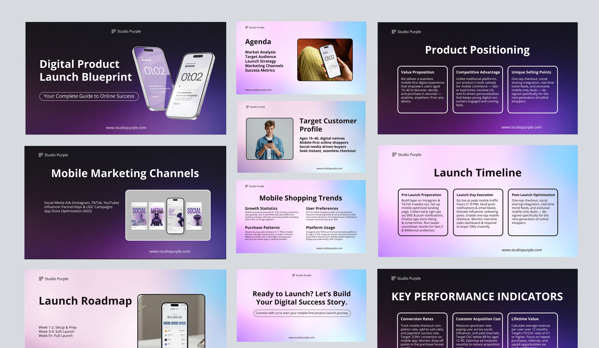
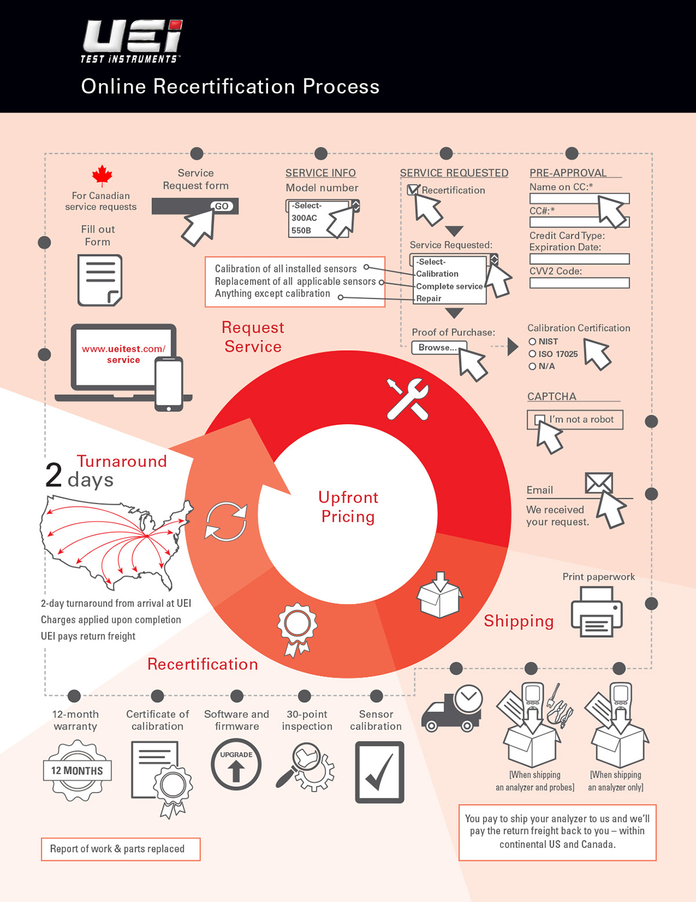
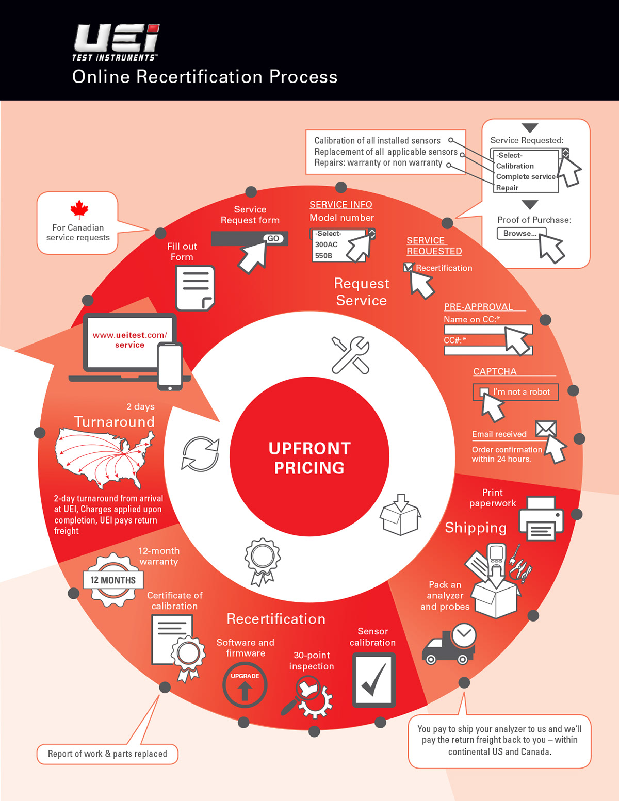
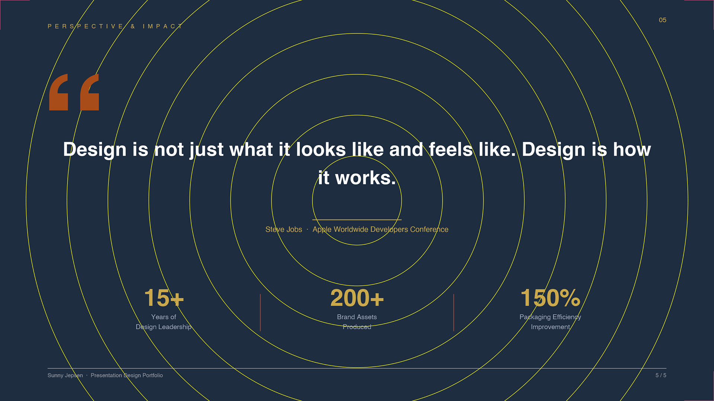

Executive Presentations
High-stakes decks, process infographics, and reusable template systems — designed to communicate clearly under pressure.

Overview
Design that makes complex information impossible to misread.
Presentation design is where design thinking meets high-stakes communication. An executive deck has seconds to establish credibility — the layout, the data visualization, the type hierarchy, the color system all have to work together to make the audience trust the information before they've read a single word.
The work in this case study spans four presentation types: an executive business review deck, a digital product launch blueprint, a process infographic redesign, and a reusable presentation design system. Each required a different approach to structure, visual hierarchy, and data communication — but all were built on the same principle: clarity first, style second.
The Q2 Executive Business Review is a board-level performance deck covering financial results, operational efficiency, market analysis, and strategic priorities. The design challenge with executive decks is density — there's a lot of information, and it all has to be digestible in a single viewing without the audience losing the thread.
The solution here is a clean blue and white design system with strong typographic hierarchy — large section numbers, bold KPI callouts, circular data visualizations for performance metrics, and a consistent grid that lets each slide breathe without sacrificing content depth. The +23% revenue growth slide and the +99.7% operational uptime slide are designed to land their headline numbers in under two seconds.
Q2 Executive Business Review — KPI overview, operational performance, revenue growth (+23% YoY), market and competitive analysis, and strategic implementation roadmap.
The Digital Product Launch Blueprint is a complete go-to-market strategy deck — covering market analysis, target customer profile, product positioning, mobile marketing channels, mobile shopping trends, launch timeline, launch roadmap, and KPI framework. This is the kind of deck that gets presented to leadership before a product ships, and to distributor sales teams at launch events.
The design uses a dark purple and gradient color system — intentionally different from a corporate blue palette to signal innovation and digital-first thinking. The layout is modular: each slide has a clear single headline, supporting content in structured columns, and consistent use of product mockups and photography to ground the strategy in something tangible.

Digital Product Launch Blueprint — agenda, product positioning (value proposition, competitive advantage, USPs), target customer profile, mobile marketing channels, launch timeline, and KPI framework.
The UEi Online Recertification Process infographic had to explain a complex multi-step service workflow — from submitting a service request through shipping, recertification, and return — clearly enough for distributors and end users to follow without additional explanation. I designed two versions, each taking a different visual approach to the same process.
Version 1 uses a linear layout with the circular process diagram as a supporting element — spreading the steps across the page for maximum legibility. Version 2 integrates the circular diagram as the dominant visual, wrapping all process steps around it for a more compact, visually bold result. Both versions use the UEi brand system and the same icon library — the difference is purely structural, showing how the same content can be organized for different contexts and audiences.


Online Recertification Process — Version 1 (left): linear layout with supporting circular diagram. Version 2 (right): circular diagram as dominant visual with steps wrapped around it.
The Presentation Design System is a reusable slide template built around a dark navy, gold, and warm white color system — the same visual language as this portfolio. It demonstrates how a well-designed template system works: a consistent split-layout structure, a disciplined type hierarchy, and a data visualization approach that adapts cleanly to different content types.
Templates like this solve a real organizational problem. When teams build decks from scratch every time, quality is inconsistent and time is wasted on design decisions that should already be made. A well-built template system gives everyone a professional starting point — so the team spends time on the content, not the layout.

Presentation Design System — keynote template in navy, gold, and warm white. Split-layout structure with data visualization placeholder. Built for reuse across presentation types.
The Result
Presentations that work before the first word is spoken.
Good presentation design does something most people don't notice when it's working — it removes friction between the audience and the information. When a slide is well-designed, the viewer's eye goes exactly where it needs to go, the hierarchy is obvious, and the data lands without explanation.
The UEi recertification process infographic was adopted by the distributor sales team for training and customer communications. The presentation templates built for portfolio use demonstrate a design system approach that translates directly to any brand's communication needs — the same thinking that built UEi's brand standards applies equally to a deck, a diagram, or a keynote.